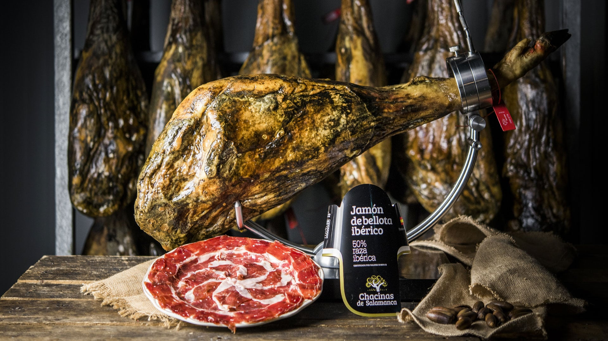
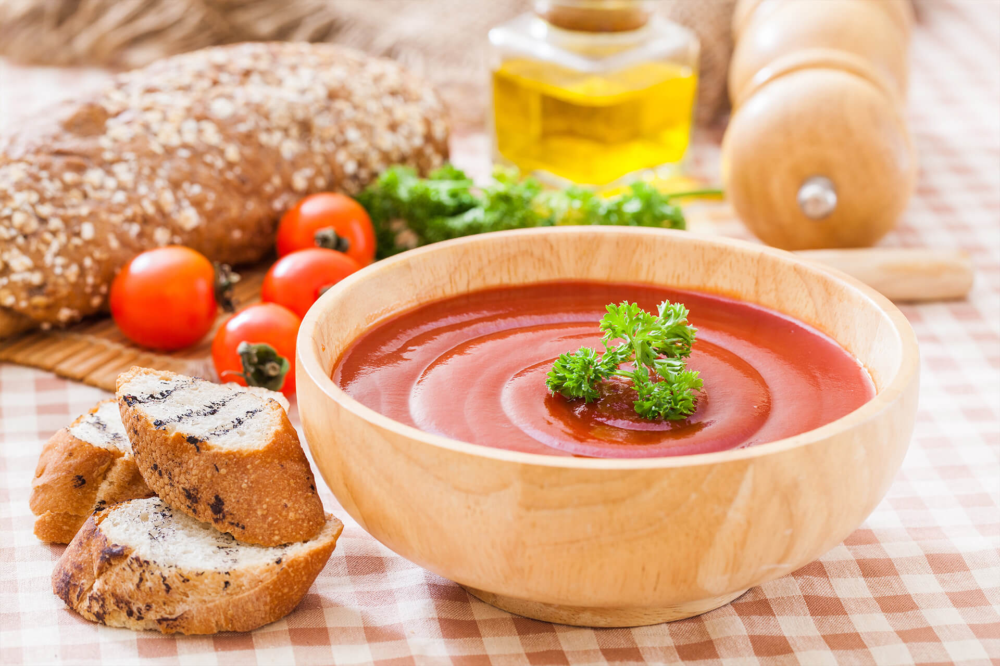

La gastronomía española es un viaje culinario a través de una tierra rica en historia, tradición y sabores auténticos. Desde las soleadas costas del Mediterráneo hasta las verdes colinas del norte, cada región de España ofrece una experiencia culinaria única que refleja su cultura y patrimonio.
Paella Valenciana
La paella es el plato más icónico de España, originario de Valencia. Se elabora con arroz, azafrán y una mezcla de mariscos, pollo, conejo y verduras. Su sabor único y la combinación de ingredientes frescos lo hacen un favorito entre los españoles y turistas por igual.

Jamón Ibérico
El jamón ibérico, especialmente el de bellota, es un manjar muy apreciado en España. Este producto se elabora a partir de cerdos de raza ibérica alimentados con bellotas, lo que le confiere un sabor inigualable. Es habitual disfrutarlo solo, en tapas o acompañado de pan y tomate.
Gazpacho Andaluz
Originario de Andalucía, el gazpacho es una sopa fría a base de tomate, pepino, pimiento, ajo, aceite de oliva y vinagre. Es refrescante y perfecto para los calurosos días de verano, siendo uno de los platos más valorados y consumidos en el sur de España.
